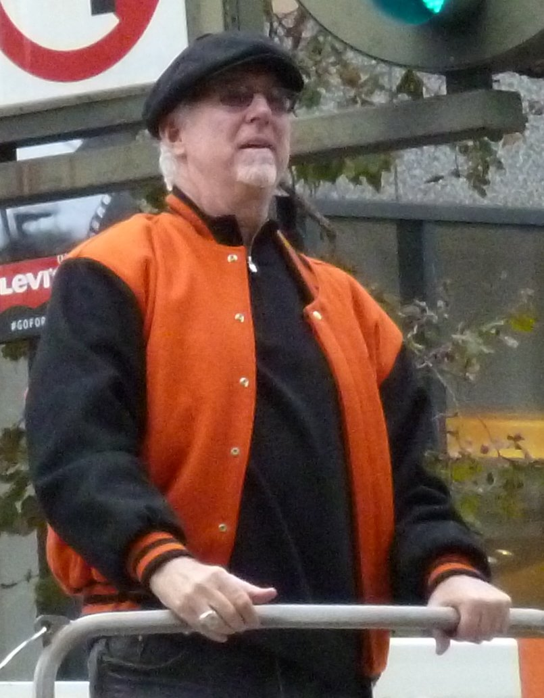

Mike Krukow Is Retiring, and I Don't Know How to Say Goodbye
He's been in our living rooms, our cars and our garages since 1990. Sunday against the Dodgers is the last time, and I'm not ready.

I've been putting this one off since August. I kept telling myself there was still time, that the season had weeks left, that I'd write it when it felt real. It's Saturday morning, the Dodgers are in town, and Sunday at 12:05 is the last game Mike Krukow will ever call. It feels real now.
I don't know how to write about a guy who's been in my house more nights than some of my relatives.

He was just always there
Kruk started on Giants broadcasts in 1990. Do the math on that and it's 37 seasons. Thirty seven years of summers. If you're a Giants fan under the age of 45, you've never known a version of this team without his voice attached to it. I sure haven't known one I can remember.
My dad had the radio on in the garage. That's where I first heard him, before I could have told you what a slider was. Later it was the TV in my first apartment with the sound up because the broadcast was better company than anybody I knew in that city. Later still it was my kid on the couch next to me asking why the funny man keeps yelling "grab some pine, meat," and me trying to explain that it means you just struck out and you should go sit down, and my kid laughing so hard he fell off the cushion. That's three generations of one family raised on the same voice. I'm not special. Every Giants family around here has a version of that story.
That's what the numbers don't catch. Thirteen Emmys, two Frick Award finalist nods, whatever. He's a part of how we grew up.
Kruk and Kuip
You can't say his name without saying the other one. Duane Kuiper and Mike Krukow were teammates on those Giants teams in the '80s, and then they sat next to each other in a booth for decades and never once sounded like two guys doing a job. They sounded like your two funniest uncles at a barbecue who happened to know everything about baseball.
They were there for all of it. Bonds and 756. Matt Cain's perfect game. 2010, 2012, 2014, three parades down Market Street, and the picture on this page is Kruk at the 2012 one in an orange and black jacket, looking about as happy as a human being can look. I was somewhere in that crowd. I didn't see him go by. I heard people yelling his name before I saw the truck, and that tells you everything, because nobody yells for the TV guy. They yelled for Kruk.
And before any of that, he could pitch. Twenty wins in 1986, an All Star, third in the Cy Young. People forget that. He was a Giant before he was the voice of the Giants.
He kept showing up
This is the part that gets me.
In 2014 he told everybody he had inclusion body myositis, a disease that slowly takes the strength out of your muscles. It doesn't get better. He could've walked away right then and not one person in this region would've said a word. He didn't. He ended up in a motorized wheelchair, the Giants made whatever changes the booth needed, and he kept coming to work. Some games he called remotely. He never once made it about himself on the air. You'd never have known how hard it was from listening, and I think that was the whole point for him.
Twelve more years of that. For us. For a team that, let's be honest, hasn't given him a whole lot to be excited about lately.
And he goes out on a 65 and 95 team
That's what makes me want to throw something. I've spent this whole season ripping this front office and this manager on this site, and I'll keep doing it next year. But the one thing I really wanted from 2026 was a September that felt like a send off. Meaningful games. A reason for him to get loud one more time.
Instead we're 65 and 95, fourth in the West, and his last weekend is against the Dodgers with nothing on the line. He deserved a pennant race. He got the Dodgers and a lost year. That's so Giants it hurts.
He'll still find something to love in it. He always does. That's the difference between him and me.
Sunday
The Giants are celebrating him before Sunday's finale at Oracle Park. I'll be there. I've already decided I'm not going to cry in public and I've already accepted that I'm going to anyway.
When he announced it back in August, he talked about Jennifer, his wife, and how blessed they'd been to stay in the game this long, and about how much they love what he called their Giants family. I read that on my phone standing in line for coffee and had to put it away. We're the lucky ones, Kruk. Not you.
Next April some new voice is going to sit in that booth, and they might be great, and I'll probably get used to it by June. That's how this works. But the first time somebody on our team strikes out a Dodger looking with the bases loaded and nobody in the booth yells at him to grab some pine, I'm going to notice. All of us are.
Thirty seven years. We're losing a good one. Maybe the best one we ever had.
Thank you, Kruk. Enjoy the bench. You earned it.
More coverage: Giants · MLB · Bay Area Sports Blog home